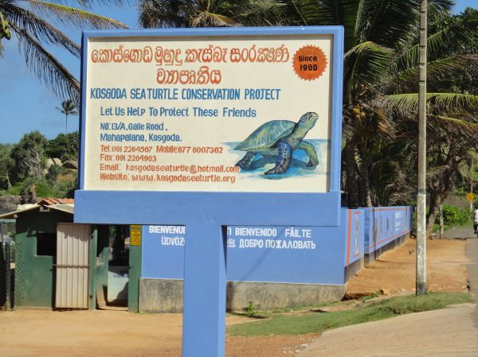
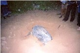

Overview

Kosgoda Hatchery is one of the oldest Hatcheries among the 18 hathceries in the southern coast of Sri Lanka.
It was startd in 1981 by Mr.Dudley Perera, and is home to all five Sri Lankan Sea turtles, namely Leatherback, Olive Ridley, Green turtle, Hawksbill and Loggerhead.
Started by Mr. Dudley Perera, the Kosgoda turtle conservation project has been underway since 1988.
The Hatchery aims to conserve local nesting sites, and monitor local sea turtle activity while providing help for injured turtles.
The project aims to educate the public on the importance of sea turtles and how they became endangered.
Activities at Kosgoda
The Hatchery
One of the most important activities of this project is its hatchery. The sanctuary provides a safe space for the eggs of turtles which are usually eaten or hunted down by predators in the beach.
It also keeps a certain number of turtles form hatching for a short period of time before “head starting” before its released.
The goal of the hatchery program is to increase the proportion of hatchlings that make it to the ocean and endure the perilous early stages of life.
The project's work is supported through donations and grants. Every year, the effort contributes to keeping the local beach clean and maintaining critical nesting sites.
Night Overwatch

In addition to discouraging poachers, patrolling the beach may allow you to see a stunning female turtle approaching her eggs.
A once-in-a-lifetime opportunity that shouldn't be passed up.
When they are most vulnerable, turtles come up onto the beaches at night to deposit their eggs.
Long trails leading to the nesting location are quite evident, so once they lay their eggs, the nests are vulnerable to predators and poachers.
Volunteering
International volunteers that help run the initiative and/or work on neighborhood improvement projects are welcomed by KSTCP with pride.
Volunteers receive practical experience working on local projects in exchange for learning about Sri Lanka, the local community, turtle protection,
and a whole lot more! Placements with the project start at one week and last for twelve weeks.
.jpg)